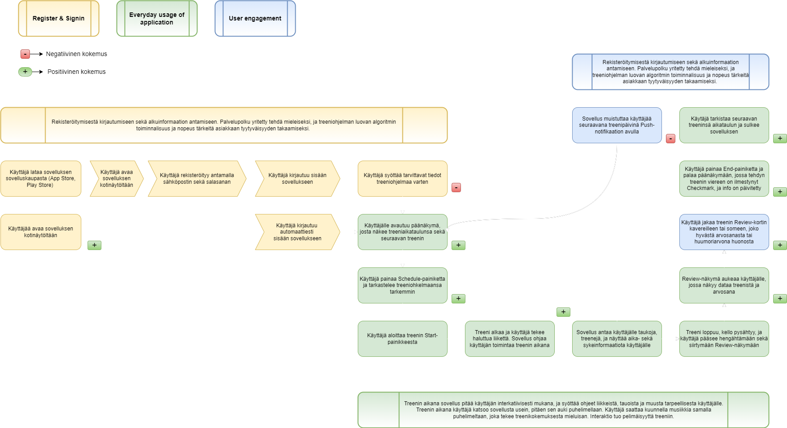

Liiku
is an application prototype that makes fitness easy and accessible to everyone.
The fitness application market is oversaturated, which has lead to companies adding more and more features to their apps.
While this can promote innovation, it makes using these apps difficult and demotivating for newcomers -
and at the same time might deter more experienced users with unnecessary features.
This project was made using
Figma,
GIMP,
and a pen and paper. A fully working prototype can be found by clicking
here,
or clicking the highlighted 'Liiku' above.
IDEA & WIREFRAMING
After the intial ideation, I made a simple wireframe using a pen & paper to get my initial visual ideas down. The wireframe consists of the most important features to be implemented into the prototype, including a login screen, user information tab, as well as the basic training-view.

CUSTOMER JOURNEY MAP
To get an idea of how I wanted the app to work, I built a Customer Journey Map that highlights key features, as well as the overall usability of the application in everyday life. The diagram also explains some of the key features regarding data collection and the hypothetical algorithm that Liiku would use.

LOGIN & SIGNUP
Liiku is designed to instantly build a tailored workout program according to user-submitted information. Besides just simple information such as age, weight, and height, I wanted to incorporate other factors that are crucial in sustaining a fitness schedule. This is why the user is asked to grade their own fitness level and goals, as well as give information about their diet. This way the app can assess what is the users current status regarding fitness, and what the user wants to get out of it.

MAIN SCREEN
For the main screen I wanted the user to have only the most relevant information displayed, without making any features hard to find.
A common reason why people stop exercising is because it takes up too much time. This is why it was important for me to display
three things on the main screen:
1. The workout program and progress for the week.
2. The day for the next workout and what it entails.
3. A button that starts the workout.
Having this information displayed helps the user see and do most tasks they need to just by looking at the main screen.
They can check their weekly schedule, their next workout, and they can easily start their workout for the day.
More intricate information is reachable via buttons on the main screen, so nothing is hard to reach.
WORKING OUT WITH LIIKU
The workout-view is designed to be interactive.
Once the user starts their workout, they're given the current task along with a preview of the remaining workout program.
This includes the name of the exercise, a visual cue, repetition amount, remaining sets, as well as the next moveset.
Along with these the user is shown a stopwatch for the workout as well as an option to sync-up their smartwatch to show heartrate in Beats Per Minute.
The user can also, at any time pause the workout if they need to using the stopwatch.
The workout-view is designed to not only give sufficient guidance and information to the user, but to also give space for the exercise at hand.
In a way it is taking the responsibility of a personal trainer, who tells you what to do, what's next, and when to take a break. The workout intensity
and schedule are customized from the initial information given by the user, but can be changed later according to success in given exercises.

During this phase of the prototype I conducted a small batch of interviews with possible users.
The participants were between 20-30 years old, and they all either exercised regularly or wanted to start their fitness journey.
I asked the participants to click through the basic login, main screen, and workout functions using my phone connected to the Figma prototype.
While they clicked through Liiku, I asked the participants to give feedback, and I also asked some questions regarding central features.
After the interviews the data was formatted to text, and coded through. During the interview coding I gathered the most common subjects of feedback,
as well as relevant ideas I had about how to solve them.
The interviews yielded, among some smaller items, the following components, that were added or modified into the prototype:
1. Sharing workouts via social media
2. Logo was produced and added to login-screen
3. Smartwatch-compatibility feature added
4. Profile editing options added
5. Chat function added
SHARING WORKOUTS AND OTHER SOCIAL FEATURES
Liiku makes exercise fun, which is why I added features that incorporate a social aspect to working out. The user has full-fledged, albeit not-forced, access to quality social components. After workouts you can share and compare with friends, with an added option to share workouts on popular social media apps. People should be proud of themselves after doing a good workout, and Liiku gives that opportunity to the users.
QUALITY OF LIFE FEATURES
Some QOL features were added to make the overall prototype smooth to use and complete.
The schedule shows a more detailed view of the upcoming workout types and days.
It utilizes simple color-coding to easily show information to the user about what they can expect to do and when.
From the schedule the user can delete or add more workouts as they see fit.
The settings and edit profile -views give easy-to-access information and customization options to the user.
The settings-view also holds information about the app version, as well as legal information regarding terms and conditions and
privacy policy. A dark-mode option was added for further customization, as well as accessibility.

COLORS, MOTIFS, AND FONTS
I wanted Liiku to boast a sleek modern design that is inviting, as well as pleasing to look at.
I decided to go with a white theme, using a mellow blue as an accent color.
Besides white and blue, there's pure black used for texts. The font-colors use opacity to differentiate between levels of information -
important information has no opacity, while information that is less relevant to the user has an opacity of 50-70%.
Since the initial ideation and wireframing, I wanted to incorporate the round, clocklike motif used in the workout-view into other components.
I ended up designing the logo using the circle as a base, and incorporated it into other parts of the app as seen below.
A/B TESTING
After working on the prototype for some time, I wanted to test a few details regarding the design.
I did this via an online A/B -test using the Google Forms API. The participants were given 3 situations and views of the app,
wherein they would choose between the two choices presented. The questionnaire regarded the following areas:
1. Profile editing view with or without a profile icon
2. Smartwatch-connectivity button placement on the main-view
3. Dark mode as a feature, toggleable option, or not implemented at all
The prototype was customized to fit the results of the questionnaire after the responses were checked through.
Component-placements were readjusted slightly, and a simple design was kept for profile editing.
TRAINING PROGRAM
During the prototyping process, I was very fortunate to work with a professional sports-coach. I was able to consult him regarding the attitudes of people getting into fitness, as well as get a first-person viewpoint of someone who has been exercising in professional settings most of their life. Through this collaboration, Liiku got a tailor-made, detailed workout program for two types of fitness goals, with three different levels: amateur, medium, and expert. Below I've included a snippet of the workout-programs and the details it includes. The workout program is a professional basis for starting to build a simple algorithm to decide a program for users, and can be further enhanced via data-collection and research.
BRAND IMAGE AND MARKETING
Liiku is a great name. It is short, sweet, and slightly nordic in the way it rolls of the tongue.
It breathes freshness and simplicity. The name itself is a large part of the marketing and brand-image of the app, and it
came to me very early on in the development.
To visualize the image further, I built a short marketing pitch that includes branding and business strategy on my WordPress page.
To read and look through the full pitch,
click here.
In essence I wanted to create and showcase the brand image, which includes the language used, visual marketing materials, as well as
a company slogan. Below is an image snippet of the marketing materials made for Liiku.
TAKEAWAYS
Liiku was a very rewarding project to work on. I got to exercise relevant skills as well as get familiar with Figma, while also being given a lot of creative freedom. While the app is only a prototype at this stage, it is an absolutely complete one at that. The design choices down to specific fonts, colors, opacitites, button placements et cetera have been carefully thought out. The branding, as well as a simple pricing model is ready for deployment, and there are professionally tailored materials to use as the basis of the hypothetical algorithm. Maybe some day I'll have the time to develop the full app!